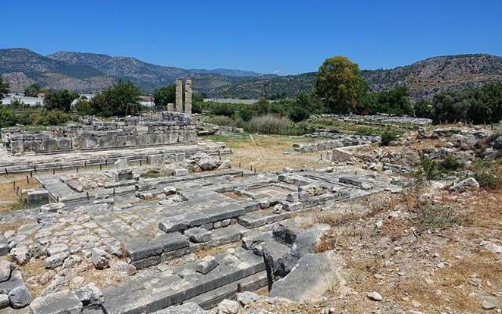

Kültür Varlıkları ガイドにはムーラの48か所が載っています：32 遺跡, 9 博物館, 2 湖, 2 ハイキングコース, 1 ラフティング, 1 城・歴史的建造物, 1 渓谷。以下に注目スポット、地図、全リストを掲載しています。
⭐ 注目スポット

1 · ムーラ · 遺跡ムーラ・クニドス遺跡
エーゲ海と地中海が出会うダッチャ半島の先端にあるクニドスは、2つの港を持つドーリア人の都市でした。芸術と科学で名高く、最初期の偉大な女性裸像のひとつであるプラクシテレスのアフロディテがここに立っていたといわれ、天文学者エウドクソスやアレクサンドリアの灯台の建築家ソストラトスはクニドス出身として知られています。劇場、神殿、アフロディテ神殿…

2 · ムーラ · 遺跡アミンタスの岩窟墓
フェティエ中心部の上の崖に刻まれたアミンタスの岩窟墓は、リュキアで最も印象的な岩窟墓のひとつです。古代テルメッソスに属し、紀元前4世紀のものとされ、2本のイオニア式円柱とペディメントを持つ神殿正面を模しています。碑文にはアミンタスの名が記されています。階段で登ることができ、フェティエ湾のパノラマが広がります。特に石が金色に染まる夕暮れ時…

3 · ムーラ · 遺跡アモス古代都市
マルマリスのトゥルンチ近くにあるアモスは、クムルビュク湾を見下ろす丘の上のヘレニズム時代のカリアの町です。海に面した劇場、神殿と城壁の遺構があり、小さいながら眺めは格別です。クムルビュクの浜辺での海水浴と組み合わせるのに適しています。
🗺 地図
📍 すべてのスポット (48)
遺跡 (32)
ムーラ・クニドス遺跡遺跡アミンタスの岩窟墓遺跡アモス古代都市遺跡 アルサダ古代都市遺跡
アルサダ古代都市遺跡 バルギュリア古代都市遺跡
バルギュリア古代都市遺跡 ボドルム古代劇場遺跡
ボドルム古代劇場遺跡 フェティエ・ゲミレル島遺跡
フェティエ・ゲミレル島遺跡 フェティエ・カヤキョイ遺跡遺跡
フェティエ・カヤキョイ遺跡遺跡
フェティエ・レトーン遺跡遺跡 フェティエ・ピナラ遺跡遺跡
フェティエ・ピナラ遺跡遺跡 フェティエ・トロス遺跡遺跡
フェティエ・トロス遺跡遺跡 ギュミュシュケセン記念墓遺跡
ギュミュシュケセン記念墓遺跡 ヘラクレイア（ラトモス）古代都市遺跡
ヘラクレイア（ラトモス）古代都市遺跡 イアソス遺跡遺跡
イアソス遺跡遺跡 カディアンダ古代都市遺跡
カディアンダ古代都市遺跡 カウノス遺跡遺跡
カウノス遺跡遺跡 ケラモス古代都市遺跡
ケラモス古代都市遺跡 ラブラウンダ遺跡遺跡
ラブラウンダ遺跡遺跡 ラギナ遺跡遺跡
ラギナ遺跡遺跡 ロリュマ古代都市遺跡
ロリュマ古代都市遺跡 ミラス・ベチン城と遺跡遺跡
ミラス・ベチン城と遺跡遺跡 ミラス・エウロモス遺跡遺跡
ミラス・エウロモス遺跡遺跡 ミラス・ウズンユヴァ（ヘカトムノスの記念墓）遺跡
ミラス・ウズンユヴァ（ヘカトムノスの記念墓）遺跡 ミラス・ウズンユヴァ記念墓と博物館複合施設遺跡
ミラス・ウズンユヴァ記念墓と博物館複合施設遺跡 ミュンドス古代都市遺跡
ミュンドス古代都市遺跡 オイノアンダ古代都市遺跡
オイノアンダ古代都市遺跡 ペダサ古代都市遺跡
ペダサ古代都市遺跡 ピュドナイ城遺跡
ピュドナイ城遺跡 セディル島遺跡遺跡
セディル島遺跡遺跡 シデュマ古代都市遺跡
シデュマ古代都市遺跡 ストラトニケイア遺跡遺跡ヒュッラリマ古代都市遺跡
ストラトニケイア遺跡遺跡ヒュッラリマ古代都市遺跡博物館 (9)
 ボドルム・セルチェ・リマヌ・ガラス沈没船展示室博物館
ボドルム・セルチェ・リマヌ・ガラス沈没船展示室博物館 ボドルム水中考古学博物館博物館
ボドルム水中考古学博物館博物館 フェティエ博物館博物館
フェティエ博物館博物館 ミラス・イアソス魚市場博物館博物館
ミラス・イアソス魚市場博物館博物館 ムーラ・ボドルム・マウソレウム記念博物館博物館
ムーラ・ボドルム・マウソレウム記念博物館博物館 ムーラ博物館博物館
ムーラ博物館博物館 ゼキ・ミュレン芸術博物館博物館マルマリス博物館博物館ミラス石造物博物館博物館
ゼキ・ミュレン芸術博物館博物館マルマリス博物館博物館ミラス石造物博物館博物館